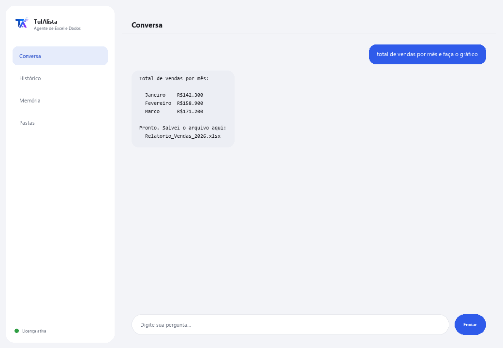

Agente de Excel e Dados
Peça o que precisar no seu idioma e ele FAZ de verdade: totais, cruzamentos, tabelas dinâmicas, gráficos e relatórios — sem escrever uma fórmula sequer.
O que resolve e o que você precisa?
Não é um chat que só comenta seus dados: é um analista que executa a operação de verdade (em um sandbox local seguro, isolado do seu sistema) e entrega o resultado — tabela na tela e o arquivo Excel ou gráfico prontos para abrir.
- Você precisa: sua chave de licença (TIA-XXXX-XXXX-XXXX-XXXX) e a pasta com suas planilhas Excel (.xlsx) ou CSV. Nada de Python nem fórmulas.
- Primeiro resultado em menos de 5 minutos: instala, ativa, escolhe sua pasta e pede “total de vendas por mês e faça o gráfico”.
- Seus dados nunca saem do seu computador — para a IA só vai a estrutura (colunas), nunca os dados, e as receitas mais comuns nem usam IA.
soporte@tuialista.com ou acesse tuialista.com/soporte — normalmente respondemos no mesmo dia útil.1 O que este agente faz
Você aponta para suas planilhas e pede qualquer coisa no seu idioma:
- “tire o total por região e faça o gráfico”
- “crie uma planilha com estas colunas e relacione com o outro arquivo”
- “relatório executivo formatado, com tabela dinâmica e gráfico incorporado”
O agente entende, monta a operação e a executa de verdade em um sandbox local seguro — não apenas descreve o que faria. Além disso:
- Tem receitas automáticas (regras fixas já testadas, sem IA, nunca falham) para o mais comum: conciliar 2 arquivos, consolidar, contas a receber por vencimento, estoque abaixo do mínimo, trazer dados de outra tabela (como um PROCV/VLOOKUP mas sem fórmulas), tabelas dinâmicas, fluxo de caixa, impostos, e mais.
- Lembra entre perguntas: você pode dizer “adicione isso ao arquivo anterior” ou “salve nos meus documentos”.
- Pode gravar rotinas suas de vários passos e repeti-las quando você pedir.
- Tem um modo ao vivo: se você já tem o Excel aberto, ele pode ler e escrever células diretamente ali (com sua confirmação antes de escrever qualquer coisa).
2 Instalação (2 minutos)
Para Windows. Não precisa de internet o tempo todo nem enviar nada para a nuvem.
Baixe o instalador em tuialista.com/descargar (agente Excel) e abra-o. Ele cria um atalho na sua área de trabalho com o logo — não precisa de Python nem terminal.
Dê duplo clique no novo ícone. Cole sua chave de licença (você a recebeu por e-mail na compra) e clique em Ativar. Você verá um check verde quando for válida.
Selecione a pasta com suas planilhas Excel (.xlsx) ou CSV e clique em Começar a usar o agente. Na próxima vez ele abre direto — lembra sua chave e sua pasta.
3 Como usar
O agente abre uma janela de chat, como um app de mensagens — não é uma tela preta de programador. Não há comandos para memorizar: você pede o que precisar como pediria a um analista, clica em Enviar (ou Enter), e ele faz:

O que faz SEM precisar de IA (modo seguro, ativado por padrão)
- Conciliar 2 arquivos / detectar faltantes
- Consolidar vários arquivos em um · remover duplicados · limpar
- Contas a receber por vencimento (30/60/90)
- Estoque: abaixo do mínimo · valorização · estoque parado
- Cruzar e trazer dados (PROCV) · tabelas dinâmicas · top-N · totais por X
- Comparar preços/versões · cotação mais barata · detectar anomalias
- Fluxo de caixa · orçado vs realizado · impostos · horas do ponto
Quer ver as 20 receitas completas com um exemplo real de cada uma? Consulte o Catálogo de receitas — um documento separado por ser extenso: catalogo_recetas.pdf junto com este manual, ou a versão interativa em tuialista.com/guia/excel/recetas.
Memória e rotinas
Você pode dizer “salve isso como meu relatório semanal” para repetir uma operação depois com “rode meu relatório semanal”, ou “retome o de ontem” para continuar de onde parou — mesmo em outra sessão.
Modo ao vivo (Excel aberto)
Se você já tem o arquivo aberto no Excel, pode pedir coisas diretas sobre células (“quanto soma B2:B40?”, “coloque em D5 o total”). As leituras respondem na hora; as escritas mostram uma prévia e esperam seu “sim” antes de tocar no arquivo.
4 Exemplos de uso comum
Tirar um total sem fórmulas
“qual foi o total de vendas de março?”
Comparar períodos ou categorias
“compare as vendas de janeiro com fevereiro por região” — responde com uma tabela comparativa.
Conciliar dois arquivos
“concilie o arquivo do banco com o da contabilidade e me diga o que falta” — receita automática, sem IA.
Um relatório completo
“relatório executivo formatado, com tabela dinâmica e gráfico incorporado” — entrega o arquivo Excel pronto.
5 Perguntas frequentes
Meus dados são enviados para a internet?
Quais formatos ele aceita?
Ele realmente executa a operação ou só a descreve?
O que acontece se eu pedir algo fora das receitas testadas?
O modo ao vivo pode danificar meu Excel aberto?
Em que idioma ele responde?
Ele pode ler vários arquivos ao mesmo tempo?
Posso mudar a pasta de dados?
Ele modifica meus arquivos originais?
O que são as “rotinas”?
6 Solução de problemas
Não carrega um arquivo Excel
Mostra “0 planilhas carregadas”
Diz “Licença inválida” ou pede para reconectar
Diz que essa tarefa não está no modo seguro
O modo ao vivo não responde
Nenhuma dessas soluções resolveu seu problema? Escreva para nós diretamente — teremos prazer em revisar com você.
soporte@tuialista.com ou acesse tuialista.com/soporte — normalmente respondemos no mesmo dia útil.7 Privacidade e confidencialidade
Seus dados nunca saem do seu computador.
- As receitas automáticas (conciliar, consolidar, contas a receber, estoque, trazer dados de outra tabela, tabelas dinâmicas, fluxo de caixa...) rodam 100% local, sem IA.
- Para tarefas novas com IA (modo especialista), para a IA só é enviada a estrutura (nomes de colunas), nunca seus dados.
- A única coisa que trafega pela internet é: (1) uma verificação de que sua licença está ativa, e (2) a estrutura das suas planilhas quando é necessária IA para uma tarefa nova.